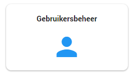

Er zijn 5 standaard rollen binnen ZyLAB ONE. Vooraf moet worden bepaald welke gebruikers welke rol krijgen toegewezen.
Alleen upload
De alleen upload rol geeft enkel de rechten om data te mogen uploaden in het ZyLAB dossier, deze rol kunt u toe bedelen aan gebruikers die enkel data dienen te uploaden.
Behandelaar
De behandelaar rol geeft de meest standaard rechten binnen het systeem die noodzakelijk zijn voor de beoordelaar om hun werk te doen.
Behandelend jurist
De behandelend jurist rol is een uitgebreidere behandelaar rol waar de gebruikers additionele rechten krijgen.
Communicatie
De communicatie rol geeft enkel de rechten om documenten binnen het dossier in te zien.
Woo-coordinator
De Woo-coordinator rol heeft toegang tot vrijwel alle rechten binnen ZyLAB, daarbij hebben ze ook de mogelijkheid om de andere rollen toe te bedelen of te wijzigen.
Het is mogelijk om wijzigingen te maken in de standaard rollen of om rollen toe te voegen in ZyLAB. Meer informatie hierover vindt u in het topic Role Management (Engels).
Het toewijzen van de rollen kan in het Configuratie Dashboard onder de tegel Gebruikersbeheer.

Daarnaast is het ook mogelijk om vanuit Gebruikersbeheer nieuwe gebruikers uit te nodigen voor een zaak. Meer informatie hierover vindt u in het topic User Management (Engels).